De verandering waargenomen
A.E. Cohen als historicus en universitair bestuurder
Tentoonstelling in de Universiteitsbibliotheek te Leiden, van 28 november 2003 tot en met 4 januari 2004.
Tentoongestelde stukken
3. Studie in Leiden: Huizinga
Huizinga werd in de jaren dertig een internationale vermaardheid – “wij zagen dat gebeuren” –, tegen wie ook menig Leids student torenhoog opkeek. Slechts enkele studenten, die door hun werk blijk gaven over kennis van zaken en enthousiasme te beschikken, kregen nader contact met hem. Dolf Cohen was een van hen: in zijn scriptie over een colloquium van Erasmus zijn waarderende opmerkingen van Huizinga aan te wijzen en uiteindelijk promoveerde Cohen ook bij Huizinga op 18 augustus 1941. Na die dag hebben beiden elkaar niet meer ontmoet.
| 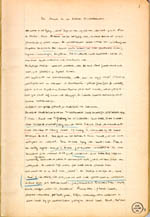 | 3.1. Cahier met aantekeningen van A.E. Cohen van het college van Huizinga over `Staat en maatschappij in de latere Middeleeuwen’. [BPL 3364/3] |
| 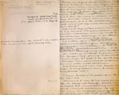 | 3.2. Huizinga’s dictaat voor hetzelfde college [UBL, Huizinga-archief 8, fol. 1 rode nummering] |
| 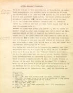 | 3.3. Erasmus’ Colloquium
Peregrinatio Religionis Ergo, collegescriptie door Cohen geschreven,
met opmerkingen van Huizinga, 42 pp. [AEC].
¶ De scriptie ligt open op p. 35 en 36. |
| 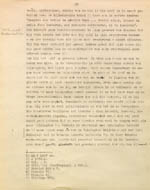 | |
| 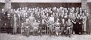 | 3.4. De deelnemers aan de
geschiedenis-conferentie te Woudschoten (Zeist), 1936. [AHM]
¶ Op de linkerbank Annie Romein-Verschoor en Jan Romein
(rechts). Op de rechterbank Pieter Geyl (links) en Loe de Jong
(rechts). Achter Lou de Jong staand: Dolf Cohen. |
| 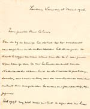 | 3.5. J.J. von Schmid aan A.E.
Cohen, 18 maart 1936 [AEC]
¶ Von Schmid was privaat-docent in de sociologie. Daarnaast had hij als voorzitter met Cohen als secretaris een werkgroep gewijd aan het thema volkseenheid. Daarop heeft de brief betrekking. Citaat: Door de wijze waarop het debat na Uw voordracht van eergisteren zich ontwikkelde heb ik vergeten U dank te zeggen namens allen voor de m.i. zeer goede wijze waarop door U een historisch overzicht van de Nederlandsche volkseenheid en de boeiende tegenstellingen daarin, een samenvatting van de verschillende avonden omtrent deze vraagstukken benevens een perspectief, zijn gegeven. |
| 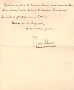 | |
| 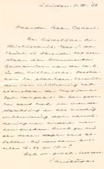 |
3.6. Huizinga aan A.E. Cohen, Leiden, 9 maart 1938 [UBL]
¶ Het `Geachte heer Cohen’ heeft plaats gemaakt voor `Waarde heer Cohen’. De brief gaat over het inrichten van de leeszaal voor de werkgroep van Huizinga. |
| 3.7. Studenten-afvaardiging voor José
Ortega y Gasset [AEC]
Cohen was o.a. actief in het uitnodigen van buitenlandse
schrijvers als gastspreker voor de studenten te Leiden. Hier wacht
hij samen met mr. J.J. Kamp en diens echtgenote, en mr. L.J. Hijmans
van den Bergh bij het station Rotterdam op de Spaanse filosoof José
Ortega y Gasset, die een lezingentoernee door Nederland hield. |
|
| 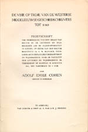 | 3.8. De visie op Troje van de
Westerse middeleeuwse geschiedschrijvers tot 1160 / Adolf Emile
Cohen. - Assen : Van Gorcum, 1941. - 171 p. ; 24 cm. - (Van
Gorcum's Historische Bibliotheek ; 25). Ook verschenen als
proefschrift Leiden. - Met lit. opg., reg.
¶ Paranimfen waren studievrienden W. den Boer en A.H. Heering. |
| 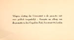 | |
| 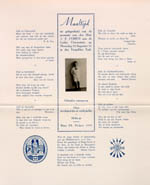 | 3.9. Kaart van het promotiediner.
¶ Een eigenlijk promotiediner heeft gegeven de bezettingsomstandigheden niet plaatsgevonden. De jonge doctor ging alleen met zijn ouders, broer en beide paranimfen eten bij de Turk in de Breestraat. |
| vorige pagina | volgende pagina |